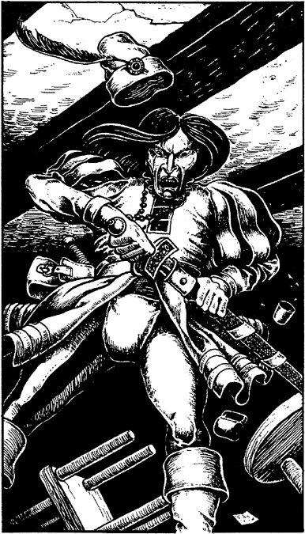

219
Suddenly, there is a mighty crash as the hall door is slammed shut. Into the tavern strides a black-browed young lordling, wearing a flamboyant costume of ebony and gold. He makes a ceremonious display of removing his velvet cloak and pompously demands food and wine, and it takes three serving girls and the innkeeper to see to his wishes. His manner is so insulting that you are not surprised to see the many scars that disfigure his young face. He must be continually provoking fights and duels.
The lordling chooses to seat himself at a table already occupied by a small, thin, inoffensive old man. Within seconds there is a thunderous outburst of foul language. The lordling grabs the old man by the throat, lifts him one-handedly from his seat, and hurls him to the floor. ‘You snivelling toad, how dare you sit with me!’ he bellows.

Bewildered and frightened, the little man fumbles an apology, but to no avail. The lordling kicks back his chair and towers over the wretch, his hand clasped around the hilt of his sword. The tavern crowd view the scene with relish, like spectators at a Vassagonian arena, for the lordling clearly intends to kill the old man.
If you possess a Bow, turn to 301.
If you do not possess a Bow, turn to 78.